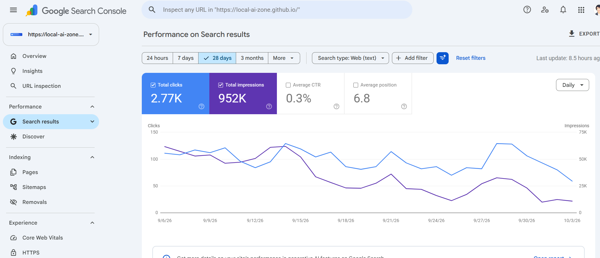
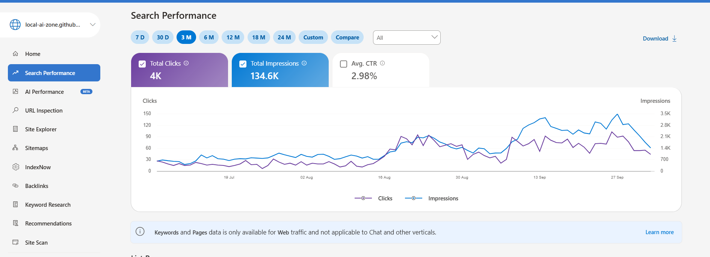
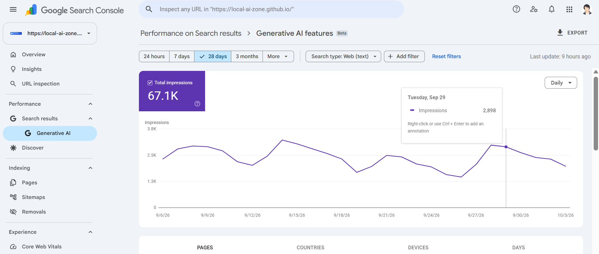
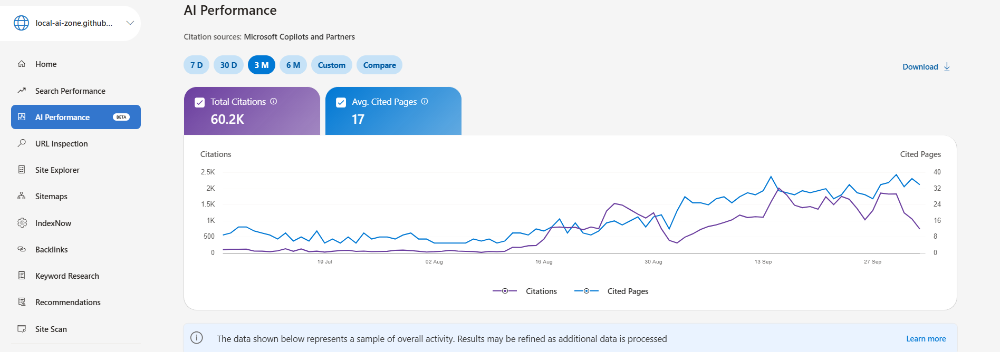

Search Traffic
An open look at how people discover Local AI Zone through Google and Bing search. The performance figures below are pulled straight from the Google Search Console and Bing Webmaster Tools APIs.
📈 Live Site Traffic
js/goatcounter.js (the GOATCOUNTER_CODE value)
and the counters above will fill in automatically. The same setting turns on
site-wide tracking for every page.
📊 Search Performance
Refreshed automatically every day from the Google Search Console and Bing Webmaster Tools APIs by a scheduled GitHub Action — no manual screenshots.
🗂️ Dashboard Captures (manual)
Neither Google Search Console nor Bing Webmaster Tools exposes its AI-search visibility report through a public API, so those two stay as manual snapshots taken from the dashboards. The classic web-search dashboards from the same sessions are included for reference.




About this data
- Search performance is automated. A scheduled GitHub Action calls the Search Console and Bing Webmaster APIs daily and commits a JSON snapshot that this page reads at load time. The daily charts and top queries above come from that snapshot.
- Google data lags by about two days. The window ends two days before today so a partial final day never drags the numbers down.
- Bing reports queries in weekly buckets. Its API returns one row per query per week with no date-range parameter, so top-query figures are aggregated across the whole window.
- If a provider fails, the last good data stays. A failed refresh keeps the previous snapshot for that provider and records the error rather than blanking the page.
- The dashboard captures are manual. The screenshots above are point-in-time captures: the AI-visibility reports have no public API, and the classic web-search dashboards are included from the same sessions.
- Live counts use GoatCounter. GoatCounter is a privacy-friendly, cookie-free analytics service. Its counter endpoint is cached for up to four hours, so those numbers are near-live rather than real-time.
- Search clicks and site visits differ. Search Console and Bing count search clicks and impressions, while GoatCounter counts actual visits to the site, so the two will never match exactly.